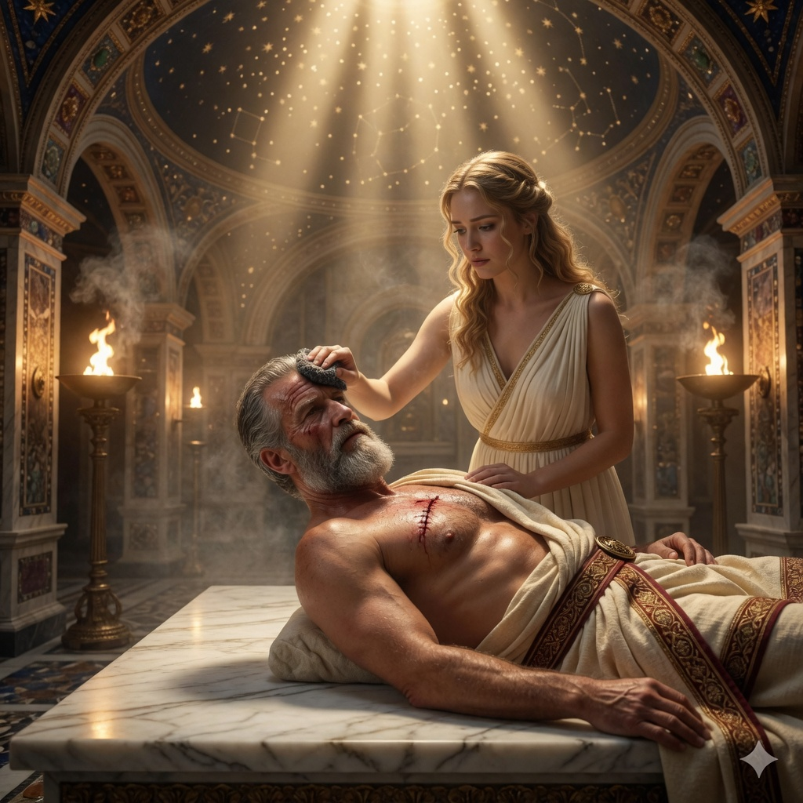

Часть 1
Глава 2.7

Солнечные лучи пробивались сквозь редеющий дым от кедровой смолы, оседающий на полу и на стенах твердой, как железо, черной, как сажа, коркой. Жаровни дотлевали у стен. Становилось светлее. Морская вода стекала по желобам пола, смывая золу.
— Ложись, — Рокэах кивнул на мраморный стол, стоящий под широкими окнами в кровле.
Йеред поскользнулся на мокром полу и закашлялся от тяжелого запаха смолы, уксуса и чего-то еще — чуждого, жгущего ноздри. Служанки только что закончили мыть его с солью и уксусом, тело горело.
«Мрамор бордовый, — отметил Йеред, — это чтобы кровь не бросалась в глаза».
Голый владетель попытался взобраться на стол, но ему это не удалось - соскользнул.
— С другой стороны есть подставка, — заметил Рокэах.
Цэль помог ему влезть.
Мастер неторопливо готовился: спешка часто ведет к неудаче.
Йеред лёг. Мрамор был тёплый — его прогрели заранее.
Рокэах тщательно смыл с рук остатки мелкого кварца, которым тер кожу. Потом подержал ладони над пламенем и сжал пальцы в кулак. Руки в порядке.
— Дыши ровно, — приказал он и он поднёс к носу Йереда чашу.
Грудь владетеля поднялась и опала. В паре настоя Йеред почувствовал запах шалфея, и другие знакомые нотки. Тимьян?
Рокэах следил за зрачками. Он нашёл пульс, кивнул Цэлю и тот подал чашу. Капли тёмной жидкости упали на губы владетеля.
- Надо выпить.
Йеред слизнул.
Горько. Тепло. Пришла тяжесть.
Комната качнулась и поплыла. Стены раздвинулись. Звуки стали глухими. Йеред хотел что-то сказать, но не смог.
— Спать, — сказал мастер-лекарь.
Веки закрылись. Дыхание стало спокойным.
Рокэах выждал немного, следя, не дрогнут ли веки, убедился, что дыхание Йереда ровное. Потом протянул руку, и Цэль вложил в нее обсидиановый нож…
Так же плавно, как засыпал, Йеред выплывал изо сна. Грезы медленно отступали. Сознание то мутилось, то прояснялось, его словно придавила тяжесть гранитной плиты. Мысли путались: он силился вспомнить, почему он попал под завал.
Потом внутри вспыхнула боль. В груди, в животе — даже дышать стало больно. Попытка двинуть рукой вызвала такую вспышку, что он задышал часто и мелко
- Ну что ты, все хорошо, - донесся до него тихий голос. – Все позади, ты скоро поправишься.
По лбу провели влажной губкой. Он хотел посмотреть, кто тут рядом, но веки подниматься отказывались.
Раздался жуткий звук, бьющий по нервам – это тот, кто протирал ему лоб, сделал пару шагов. Тихий шелест подошв перерос в мерзкие шорохи, бьющие по нервам владетеля и вызывающие глухое, бессильное бешенство. Боль ударила так, что потемнело в глазах, а в уши, словно шерсть напихали. Хотелось орать – только для крика надо дышать, а вздохнуть он не мог.
- Все, не волнуйся, я тут, - он снова почувствовал губку на лбу. – Я не буду ходить, посижу тут тихонько…
Дрожь. Он никогда так не мерз. Холодно, словно он вмерз в кусок льда. Зубы лязгали без остановки.
- Все болит… - клацая зубами с трудом прошептал Йеред. И в этом стоне он не узнал свой собственный голос.
- Скоро все пройдет, скоро пройдет… - нашептывал голос. – Спи, владетель, постарайся уснуть.
И он снова провалился в беспамятство. Там была пустота, без верха, и низа.
И обрывки кошмаров.
….Из темноты всплыл лик Наамы. Она открыла рот, и из него вместо слов вырвался крик, который ударом отдался в развороченной груди Йереда. «Отец, пощади!» — Вопль превращался в острые иглы…
Злобный смех сына. «Ты мне не отец!» – Ханох повернулся спиной и ушел. В руках его - меч. Шаги широкие, но он не удаляется, а остается на месте. Уходит и никак не уйдет. И каждый шаг его отзывался ударом в висках Йереда; спина сына излучает ледяное презрение…
– «Ты предал меня!» - Циля обнимает его. Она прижала его так сильно к себе, что трещат ребра. Кожа словно нет – она внутри грудной клетки, и Циля сжимает его обнаженную плоть. Он хватается за рану ладонью… а под ней пустота.
- Циля, Цилечка, не надо так сильно… Пожалуйста, отпусти…
Но Циля лишь сильнее сжимает объятия. Он задыхается, захлебывается черным ничто…
Йеред боится заснуть. Это не сон, а мученье. Он не хочет видений – лучше уж боль.
- Ну, вот ночь прошла, - вдруг слышит он голос.
И - чудо! Он смог, наконец, чуть-чуть приоткрыть веки. Мир перед глазами… тени и пятна. Перед ним кто-то стоит.
Рокэах. Осторожно ощупывает, нюхает воздух. Наблюдает. Кожа Йереда то сереет, то наливается синевой. Голубые жилы проступают, когда он напрягается или хочет что-то сказать.
- Ну вот, дорогой тесть, все в порядке, - сказал бодро мастер. - К вечеру ты будешь уже на ногах. Гнили не чувствую, твоя плоть привыкает быть без ребра. Ты приходишь в себя – напрягись, собери силы и начинай укрепляться.
И он вытер пальцы о фартук, на котором проступали замытые пятна.
Йеред наконец понял, где он. Застонав, он попытался дотянуться до раны, но Рокэах придержал его руку.
- Так не надо, просто сосредоточься. Не трогай грудь, рана не затянулась еще.
Йеред собрался последовать его совету, но Рокэах продолжил.
- Тебе скоро придется поесть. Когда есть захочешь – скажи пятой. Она принесет. И не тяни – тебе нужны силы.
Владетель сфокусировал взгляд за спиной лекаря и увидел фигуру.
От слабости силуэт девушки расплывался. Солнечные лучи создали вокруг нее ореол, и Йеред подумал, что красавица светится.
- Пятая, - прошептал Йеред. – Так это ты сидела со мной…